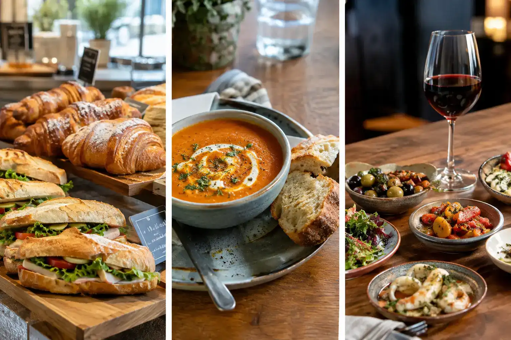
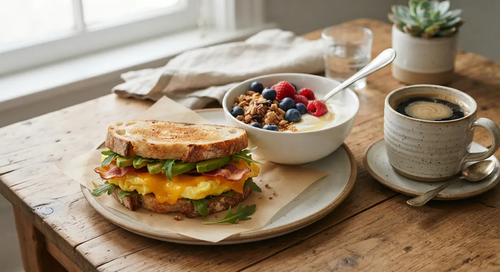
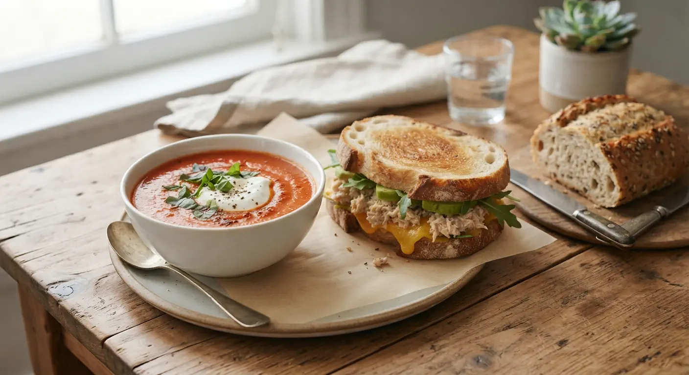
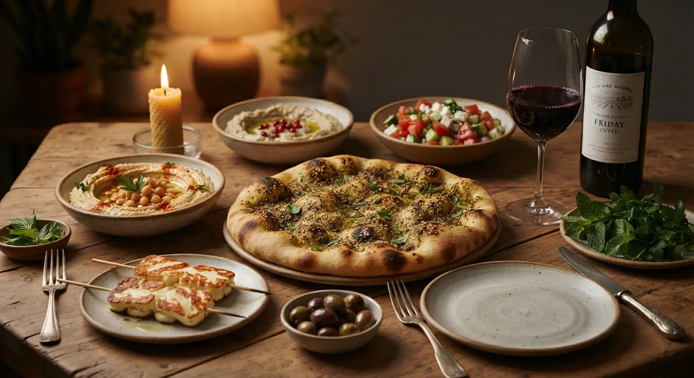

Cooked, baked, poured

What is served at Kokvrån depends on the time of day, the season and what our bakers feel like making. Everything is made in small batches, so when it's gone, it's gone. Come early for the best choice, or stay for the afternoon.

Breakfast
Start slow or grab it to go. Fresh bread, something warm and a proper coffee.
- Sourdough toast with butter and jam
- Cardamom bun
- Yoghurt with granola and berries
- Filter coffee, latte, tea

Lunch
A homemade soup and a daily special, changing with the season. Ask us what's on today.
- Soup of the day with bread
- Daily special
- Quiche with green salad
- Vegetarian option every day

Friday hang
Every Friday we serve new or different small dishes. Sometimes we bake flatbreads, sometimes there's Skagen or other spreads with good bread. It varies, simply put.
- Rotating small dishes
- Freshly baked flatbreads
- Skagen and other spreads with good bread
- French wine and drinks